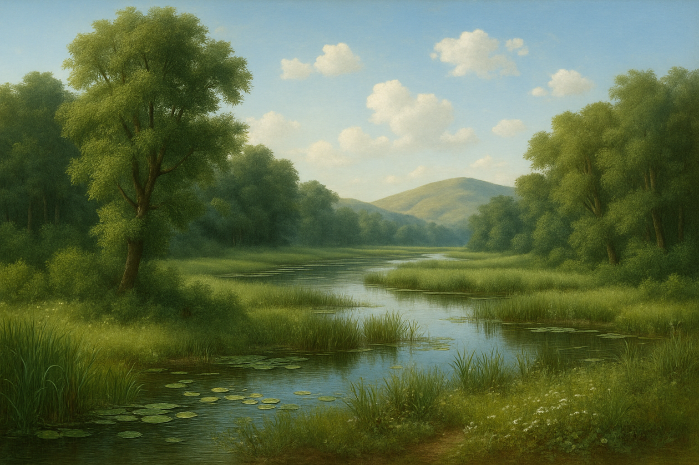
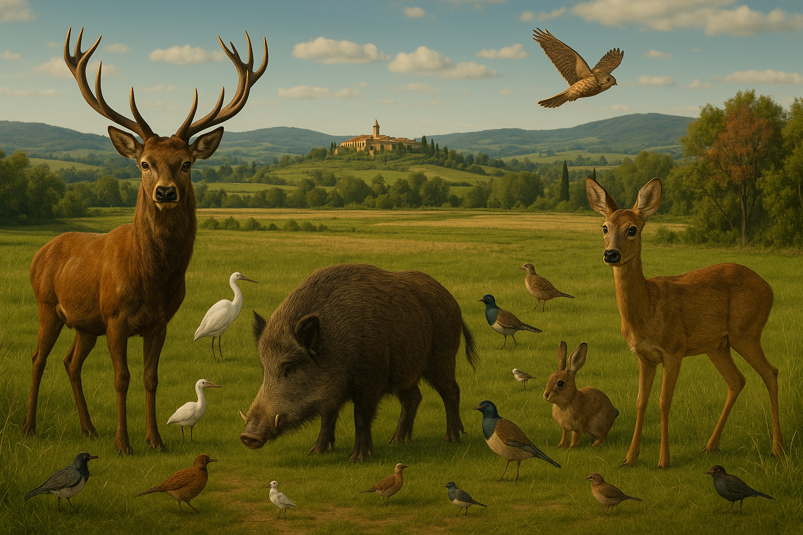

L'antica Valle del Clanis
Introduzione

La Valle del Clanis — conosciuta oggi come Val di Chiana — è uno dei paesaggi più straordinari e complessi dell'Italia centrale. Un tempo, essa era una vasta pianura paludosa solcata dal fiume Clanis, che, con le sue acque lente e abbondanti, modellava il territorio, favorendo un ecosistema ricchissimo e particolare.
Già in epoca etrusca, la valle rappresentava una risorsa fondamentale: un corridoio naturale tra la piana dell'Arno e la Valle del Tevere, nonché una culla di biodiversità. Nel corso dei millenni, la presenza dell'uomo ha trasformato profondamente il paesaggio: prima con le bonifiche idrauliche antiche, poi con gli interventi sistematici dell'età moderna, che hanno reso la valle una delle aree agricole più fertili d'Europa.
Oggi, la memoria dell'antico ambiente fluviale e palustre sopravvive in alcune zone umide residuali, nei laghi minori come quello di Chiusi e di Montepulciano, e nella straordinaria varietà di flora e fauna che ancora popolano i margini della valle.
In questo capitolo esploreremo la storia naturale della Valle del Clanis: dall'antica pianura d'acque ai paesaggi rurali moderni, attraversando millenni di evoluzione naturale e intervento umano.
Il fiume Clanis era il cuore pulsante della valle che da lui prendeva il nome. Con un andamento lento e sinuoso, il Clanis raccoglieva le acque delle colline circostanti e dei rilievi dell'Appennino, formando una vasta pianura alluvionale.
Durante le stagioni più piovose, il fiume esondava facilmente, creando ampie zone paludose che alimentavano un ecosistema straordinariamente ricco di vita.
In epoca antica, il Clanis rappresentava molto più di un semplice corso d’acqua: era una via naturale di comunicazione tra la Toscana e l’Umbria, e indirettamente tra il bacino dell’Arno e quello del Tevere. Questa funzione di collegamento rese la Valle del Clanis una terra di passaggio privilegiata per popoli, merci e culture fin dai tempi preistorici.
Dal punto di vista ambientale, le acque del Clanis sostenevano una biodiversità eccezionale:
- canneti sterminati,
- boschi planiziali di olmi, querce e pioppi,
- e una fauna ricca di pesci, uccelli acquatici, anfibi e grandi mammiferi che popolavano i suoi margini fangosi.
La vitalità naturale del Clanis creò un paesaggio unico, fatto di acque tranquille, isole erbose e foreste fluviali, che per secoli accompagnò la vita quotidiana delle popolazioni locali.
Antico fiume Clanis e sua importanza naturale.
Paludi, fiumi, laghi e sistemi idrici etrusco-romani.
Prima che l'opera secolare delle bonifiche trasformasse radicalmente il paesaggio, la Valle del Clanis si presentava come una vasta distesa d’acque stagnanti. Il fiume Clanis, alimentato da numerosi corsi d’acqua provenienti dalle colline circostanti, scorreva lentamente verso sud, formando un intreccio complesso di paludi, stagni e bracci fluviali. Durante le stagioni più piovose, le acque si espandevano senza contenimento, sommergendo la pianura e creando un ambiente umido e selvaggio, dove la linea tra terraferma e acqua era incerta e mutevole.
Questo mosaico acquatico favoriva una biodiversità straordinaria. Lungo le rive si sviluppavano canneti sterminati, saliceti e boschi planiziali dominati da pioppi e olmi. Nei tratti più bassi, gli stagni e le pozze ospitavano una grande varietà di pesci, anfibi e uccelli acquatici, mentre i margini fangosi vedevano il passaggio di cervi, cinghiali e altri grandi mammiferi. La natura palustre dominava il paesaggio, facendo della valle una delle aree umide più estese e vitali dell’Italia antica.
Conscia del potenziale agricolo di questa vasta pianura, la civiltà etrusca intervenne per tentare di domare le acque. Gli Etruschi, abilissimi ingegneri idraulici, realizzarono opere di canalizzazione e di drenaggio che permettevano di regolare in parte le esondazioni e di rendere coltivabili le terre più elevate. Scavarono canali artificiali, costruirono fossi di scolo e modificarono l’andamento di alcuni affluenti per controllare i livelli delle acque.
I Romani, subentrati più tardi, perfezionarono questa sapiente gestione idraulica. Consolidarono gli argini, regimentarono ulteriormente il corso del Clanis e resero alcuni tratti navigabili, trasformando la valle in una sorta di arteria commerciale che collegava l'entroterra toscano con il Tevere e, attraverso esso, con Roma. La natura selvaggia della valle, tuttavia, non scomparve del tutto: rimase un paesaggio di confine tra il regno dell’acqua e quello della terra, testimone di un equilibrio fragile che sarebbe durato ancora molti secoli.
La biodiversità della valle antica: fauna e flora palustri
Nell’antica Valle del Clanis, l’acqua era la padrona incontrastata del paesaggio, e la sua presenza dava vita a una biodiversità ricchissima e complessa. Laddove oggi si estendono campi coltivati e vigneti ordinati, si alternavano allora estese zone di canneti, prati umidi e boschi igrofili, punteggiati da stagni e bracci di fiume.
Le piante palustri dominavano la scena. Distese di cannuccia di palude ondeggiavano al vento, accompagnate da densi giunchi, tife e salici bianchi, che crescevano a ridosso dei corsi d’acqua più tranquilli. Nei tratti leggermente più asciutti, le foreste planiziali ospitavano olmi campestri, querce farnie e pioppi neri, creando fitte cortine di verde che riflettevano le stagioni nelle acque stagnanti.
La fauna trovava in questo ambiente un rifugio ideale. Stormi di aironi cenerini, cicogne bianche e germani reali si muovevano tra i laghi e le paludi, mentre le rive fangose erano percorse da anfibi come la rana verde e la salamandra pezzata. Nei tratti più profondi e lenti del fiume Clanis nuotavano carpe, lucci e tinche, pesci adattati a vivere nelle acque calme e cariche di sedimenti.
Tra la vegetazione più densa, trovavano rifugio anche grandi mammiferi. Cinghiali, cervi e caprioli si muovevano silenziosi lungo i margini dei boschi umidi, mentre predatori come il lupo appenninico e la lince vigilavano sui confini invisibili di quel regno d’acqua e di terra.
In questa valle paludosa, ogni elemento naturale era intimamente connesso: l’acqua sosteneva le piante, le piante proteggevano la fauna, e la fauna contribuiva, a sua volta, al mantenimento dell'equilibrio. Era un mondo fragile, modellato dall’alternarsi delle stagioni, dove la vita seguiva il ritmo lento e maestoso delle acque del Clanis.
Cambiamenti Ambientali

Bonifiche etrusche, romane, medievali e medicee
Il paesaggio della Valle del Clanis non rimase immutato. Fin dall’antichità, le popolazioni che abitarono queste terre compresero il valore e il pericolo delle sue acque. I primi a tentare di addomesticare il fiume furono gli Etruschi, ingegneri naturali straordinari. Attraverso la realizzazione di canali di drenaggio, opere di regolazione idrica e deviazioni controllate, cercarono di sottrarre alla palude porzioni di terra fertile, senza però stravolgere l’equilibrio complessivo della valle. Il Clanis continuava a vivere come elemento centrale, ma progressivamente regolato.
Con l’avvento della dominazione romana, l’approccio alla valle cambiò radicalmente. I Romani, pragmatici e tecnici raffinati, concepirono una gestione ancora più sistematica. Bonificarono ampie porzioni di terreno, regimentarono gli affluenti, e progettarono vie d’acqua navigabili, utili non solo al commercio, ma anche al controllo territoriale. La valle divenne un grande bacino agricolo e produttivo, collegato tramite il Clanis e il Paglia al sistema fluviale del Tevere. Tuttavia, anche l’equilibrio romano aveva i suoi limiti: l’instabilità delle acque e l’erosione dei terreni restavano una minaccia costante.
Nel corso del Medioevo, con il declino delle infrastrutture romane, la situazione ambientale della Valle del Clanis subì un regresso. I canali si insabbiarono, gli argini crollarono, e gran parte della valle tornò a essere dominata da paludi e stagni. Solo a partire dal Basso Medioevo e con la nascita delle prime comunità monastiche benedettine si tentarono nuovi interventi idraulici, piccoli e frammentari, volti più a proteggere i singoli insediamenti che a modificare l'intero ecosistema.
La svolta definitiva arrivò con il Rinascimento e l’epoca delle bonifiche medicee. I granduchi di Toscana, a partire da Cosimo I de' Medici, promossero una visione moderna della gestione del territorio: grandi opere di drenaggio, costruzione di canali maestri e deviazioni delle acque verso il fiume Arno.
Tra il XVI e il XVIII secolo, la Valle del Clanis fu progressivamente trasformata da palude a fertile pianura agricola, in uno dei più ambiziosi progetti di bonifica dell'Europa moderna.
Queste bonifiche non cancellarono soltanto le paludi: cambiarono per sempre l’identità naturale della valle. Dove un tempo dominavano l’acqua e il canneto, sorsero campi coltivati, vigneti, uliveti e strade che avrebbero segnato il volto della Val di Chiana fino ai giorni nostri.
Trasformazione della valle da palude a campagna agricola
La trasformazione della Valle del Clanis da estesa pianura paludosa a rigogliosa campagna agricola fu un processo lungo e complesso, che attraversò i secoli modificando non solo il paesaggio, ma anche il rapporto tra l’uomo e il territorio. Per millenni, le popolazioni che abitarono la valle dovettero convivere con l’acqua: acque amiche, che donavano vita e fertilità, ma anche acque ostili, che invadevano i campi, minacciavano i villaggi, e diffondevano malattie.
Con l’epoca moderna, e in particolare con le grandi bonifiche medicee, l’equilibrio cambiò radicalmente. L’antico fiume Clanis fu progressivamente domato: il suo corso venne interrotto e deviato, le sue acque incanalate verso l’Arno, lontano dal cuore della valle. I canali maestri e i fossi di scolo divisero la pianura in grandi lotti regolari, tracciando una nuova geografia fatta di linee rette, confini geometrici e campi aperti.
La palude, che per secoli aveva dominato il paesaggio, venne lentamente prosciugata. Dove prima si estendevano laghi effimeri e stagni mutevoli, iniziarono a crescere coltivazioni ordinate: grano, mais, girasoli, viti e olivi divennero i nuovi protagonisti della valle. I boschi planiziali si ridussero, i canneti scomparvero quasi ovunque, sostituiti da filari di pioppi e strade bianche che solcavano l’orizzonte.
La campagna agricola che ne derivò non era soltanto un paesaggio fisico: era anche il risultato di un nuovo modo di pensare la natura. La valle veniva ormai vista come una macchina produttiva, da regolare, coltivare e sfruttare sistematicamente.
Eppure, nonostante la profonda trasformazione, nei luoghi dove l’acqua aveva regnato a lungo rimasero tracce indelebili: nell’umidità della terra, nelle pieghe dei fossi, nei riflessi dei laghi sopravvissuti, memoria viva di un passato in cui la Valle del Clanis era ancora regno indiscusso delle acque.
Ecosistemi Attuali

Zone umide residue
Nonostante la grande trasformazione operata nei secoli, la Valle del Clanis conserva ancora frammenti del suo antico passato d’acqua e di palude. Tra campi coltivati e vigneti ordinati, sopravvivono poche ma preziose zone umide residue, autentiche isole di biodiversità che raccontano la memoria viva di un paesaggio scomparso.
I più evidenti testimoni di questa eredità sono i piccoli laghi rimasti nella parte meridionale della valle: il Lago di Chiusi e il Lago di Montepulciano. Questi specchi d’acqua, ridotti rispetto alla loro estensione antica, rappresentano ciò che resta delle vaste paludi che un tempo dominavano la pianura. Intorno a essi si sviluppano ambienti ancora ricchi di vita: canneti, boschetti umidi, prati allagati che ospitano una sorprendente varietà di specie.
L’Oasi Naturalistica del Lago di Montepulciano, istituita a protezione di questo fragile ecosistema, custodisce una straordinaria ricchezza di flora e fauna. Aironi, falchi di palude, svassi e anatre selvatiche trovano rifugio tra le acque tranquille, mentre le rive sono popolate da salici bianchi, pioppi tremuli e fitti canneti che ondeggiano al vento.
Anche lungo i tratti residuali dei fossi e dei canali più antichi, soprattutto nelle zone meno intensamente coltivate, resistono piccole enclave naturali: stagni temporanei, boschetti ripariali, pozze d’acqua dolce dove la vita riaffiora ad ogni primavera.
Queste zone umide, pur frammentarie, sono fondamentali non solo come riserve di biodiversità, ma anche come preziosi indicatori della storia ambientale della valle. Esse custodiscono la memoria profonda di un’epoca in cui la Valle del Clanis era un mare verde e azzurro, vibrante di voci e di riflessi d’acqua, oggi sopravvissuto solo in pochi angoli silenziosi.
Campagna coltivata: colture storiche e moderne
Con il prosciugamento delle acque e la progressiva bonifica della pianura, la Valle del Clanis cambiò volto: da mondo d’acque e paludi, si trasformò in una vasta campagna coltivata, ordinata secondo i disegni della razionalità agricola.
Nei primi secoli successivi alle grandi bonifiche, le colture più diffuse furono quelle tipiche dell'agricoltura tradizionale toscana: il grano occupava ampie superfici, seguito dalla segale, dall’orzo e dalla spelta. Queste colture si adattavano bene ai terreni bonificati, fertili ma ancora giovani, e garantivano il sostentamento delle comunità locali.
Accanto ai cereali, si sviluppò anche la coltivazione della vite e dell’olivo, che si espansero soprattutto sulle colline circostanti la pianura, disegnando i celebri paesaggi a terrazza che ancora oggi caratterizzano il cuore della Toscana.
Con il passare dei secoli, la campagna della Val di Chiana si diversificò ulteriormente. Nel corso dell'Ottocento e del Novecento, l'introduzione di colture come il mais e la barbabietola da zucchero arricchì il mosaico agricolo, accompagnata da una progressiva modernizzazione delle tecniche colturali. Il mais, in particolare, trovò nella valle un ambiente ideale, grazie alla ricchezza d’acqua e alla qualità dei suoli limosi, diventando uno dei pilastri della produzione agricola locale.
Oggi la Valle del Clanis si presenta come un ampio tappeto agricolo variopinto, dove ai campi di grano e mais si alternano vigneti ordinati, oliveti secolari e distese di girasoli che in estate colorano l’orizzonte d’oro.
Le colture moderne convivono con i retaggi del passato: antichi poderi, strade bianche, filari di cipressi, e fossi che seguono ancora il disegno imposto dalle antiche canalizzazioni.
La campagna coltivata è diventata l'anima visibile della valle, ma sotto la sua superficie, invisibile agli occhi, pulsa ancora il battito profondo di una terra che un tempo era tutta acqua, vento e silenzio.
Flora e fauna oggi
Specie tipiche della valle
Oggi, camminando nella Valle del Clanis, è possibile cogliere i segni discreti della natura che resiste e si adatta. Sebbene il paesaggio agricolo abbia trasformato profondamente l’aspetto originario della valle, la flora e la fauna tipiche delle zone umide e dei boschi planiziali sopravvivono ancora, nascosti tra i campi, lungo i fossi e nei pressi dei laghi rimasti.
Tra gli alberi, dominano le querce e gli olmi campestri, antichi abitanti della pianura, che offrono riparo e ombra lungo gli argini dei canali e nei pochi lembi di bosco superstiti. Accanto a loro si ergono i pioppi, con le loro chiome leggere che vibrano al minimo soffio di vento, testimoni silenziosi del legame profondo tra terra e acqua che ha modellato la valle per millenni.
Le zone umide residue e le rive dei laghi ospitano una varietà di uccelli che testimoniano la vitalità dell'ecosistema. Gli aironi cenerini, con il loro volo maestoso e le lunghe zampe eleganti, si muovono tra i canneti in cerca di prede. Non è raro scorgere anche qualche cicogna bianca, elegante e solenne, posata tra i campi o in volo lento sopra i tetti dei casolari antichi. La presenza di anfibi come la rana verde e la salamandra pezzata è segno della salute delle acque residue: queste creature, antiche quanto la valle stessa, continuano a vivere tra gli stagni e i fossi che punteggiano la campagna.
Nonostante i profondi cambiamenti, la Valle del Clanis mantiene ancora un'anima naturale vibrante, fatta di suoni, colori e movimenti discreti. Un mondo nascosto agli sguardi frettolosi, che si rivela solo a chi sa osservare con pazienza: il fruscio lieve delle canne, il balzo improvviso di una rana tra l’erba, il riflesso argenteo di un airone in volo al tramonto.
Presenze rare e protette
Tra le pieghe discrete della Valle del Clanis moderna si nascondono ancora alcune presenze straordinarie, fragili eredi di un mondo antico che la trasformazione agricola non è riuscita a cancellare del tutto. Sono specie rare, protette per il loro valore ecologico e simbolico, testimoni di un passato naturale che ancora resiste, seppur a fatica.
Nelle zone umide residue, tra i canneti e le acque tranquille dei laghi di Chiusi e Montepulciano, sopravvivono popolazioni di tarabusini e aironi rossi, uccelli elusivi, difficili da avvistare, che necessitano di ambienti estremamente stabili e protetti. Il loro volo basso e silenzioso sopra le paludi è il segno più delicato della vitalità nascosta della valle.
Accanto a loro, fa ritorno, in alcune stagioni, la maestosa cicogna nera, specie ancora più rara della cugina bianca, che predilige gli angoli più tranquilli e selvatici, lontani dai rumori della campagna coltivata.
Tra gli anfibi, è particolarmente significativa la presenza del tritone crestato italiano, una specie minacciata che trova rifugio nei piccoli stagni e nei fossati umidi ancora sopravvissuti alla razionalizzazione del paesaggio. La sua presenza indica ambienti ancora sani, dove l’acqua mantiene una qualità e una continuità sufficienti a sostenere le delicate fasi della vita anfibia.
Anche tra le piante emergono segnali preziosi. Negli angoli più inaccessibili si conservano antichi esemplari di querce farnie e di olmi campestri, alberi sopravvissuti alle grandi bonifiche e all'agricoltura moderna, oggi considerati monumenti naturali. In alcune aree umide si possono ancora incontrare rare varietà di orchidee spontanee, fiori minuscoli ma preziosissimi, che impreziosiscono i prati umidi in primavera.
Queste presenze, invisibili alla maggior parte dei passanti, rappresentano il cuore nascosto della Valle del Clanis. Conservarle non significa soltanto proteggere delle specie: significa salvaguardare la memoria profonda di un paesaggio millenario, e custodire per il futuro l'eco di una valle che, un tempo, era fatta quasi interamente di acqua, vento e vita selvatica.
Problemi ambientali e conservazione

Urbanizzazione, frammentazione del paesaggio, cambiamenti climatici
Nonostante il fascino antico che ancora oggi la Valle del Clanis riesce a evocare, il suo ambiente naturale si trova ad affrontare sfide profonde e complesse. Il paesaggio che un tempo era dominato dall'acqua, dagli alberi e dai canti degli uccelli è oggi frammentato, in parte compromesso dall'avanzare inesorabile delle trasformazioni moderne.
L'urbanizzazione rappresenta una delle principali minacce. Centri abitati cresciuti rapidamente, infrastrutture stradali, insediamenti industriali e aree artigianali hanno ridisegnato ampie porzioni della valle. Le antiche connessioni tra i diversi ambienti naturali sono state interrotte, e molte zone che un tempo fungevano da corridoi ecologici per le specie animali sono ora barriere artificiali, difficili da attraversare per la fauna selvatica.
A questa pressione si aggiunge la frammentazione del paesaggio agricolo. La progressiva meccanizzazione dell’agricoltura ha favorito la creazione di campi sempre più grandi e uniformi, riducendo drasticamente la presenza di siepi, fossati naturali, boschetti e zone di rifugio per gli animali. La varietà di ambienti che un tempo caratterizzava la valle si è ridotta, e con essa è diminuita la biodiversità.
Infine, i cambiamenti climatici stanno già lasciando il loro segno. Le estati sempre più lunghe e secche, le piogge brevi e violente, l'aumento delle temperature medie minacciano la stabilità degli ecosistemi rimasti. Le zone umide, già ridotte a lembi marginali, soffrono di siccità più frequenti e di un progressivo abbassamento delle falde acquifere. Specie animali e vegetali, abituate a condizioni più umide e stabili, devono affrontare cambiamenti troppo rapidi per riuscire ad adattarsi naturalmente.
Nonostante queste difficoltà, nella Valle del Clanis si moltiplicano i progetti di tutela e recupero. Oasi naturalistiche, programmi di rinaturalizzazione dei fossi, progetti di agricoltura sostenibile e iniziative per il ripristino delle zone umide dimostrano che la consapevolezza della preziosità di questo patrimonio naturale è ancora viva.
Proteggere la valle significa oggi salvare non solo un ambiente ricco di vita, ma anche un pezzo fondamentale della memoria storica e culturale dell'Italia centrale.
Progetti di tutela della biodiversità
Di fronte alle trasformazioni profonde che hanno segnato il volto della Valle del Clanis, negli ultimi decenni è emersa una nuova consapevolezza: la necessità di proteggere ciò che resta dell'antico paesaggio naturale e di recuperare, dove possibile, gli equilibri perduti.
I primi passi concreti sono stati compiuti attraverso la creazione di aree protette e oasi naturalistiche, come l'Oasi del Lago di Montepulciano, nata per preservare uno degli ultimi ambienti umidi significativi della valle.
Qui si è cercato non solo di conservare la fauna e la flora tipiche, ma anche di ricreare, con interventi mirati, le condizioni ambientali che permettano il ritorno di specie rare e minacciate.
Parallelamente, sono stati avviati progetti di rinaturalizzazione dei corsi d’acqua minori e dei fossi storici, attraverso il recupero di tratti naturali, la piantumazione di alberi autoctoni lungo gli argini e il ripristino di siepi campestri, fondamentali come corridoi ecologici per la fauna selvatica.
Un altro fronte di intervento riguarda l'agricoltura sostenibile. In alcune zone della valle, aziende agricole e consorzi locali hanno aderito a programmi di produzione biologica e di agricoltura integrata, pratiche che riducono l'impatto chimico sui suoli e sulle acque, favorendo la tutela degli habitat residui.
Non meno importante è l'azione di educazione ambientale. Attraverso centri visite, percorsi didattici e attività di sensibilizzazione, si cerca di avvicinare la popolazione locale e i visitatori alla conoscenza del patrimonio naturale della Valle del Clanis. Perché proteggere un territorio non significa soltanto difendere delle specie: significa raccontare e far amare il paesaggio, riattivare un legame antico tra l'uomo e l'ambiente che lo circonda.
Questi progetti, pur tra mille difficoltà, testimoniano che il futuro della Valle del Clanis non è ancora scritto. Nella trama invisibile delle sue acque residue, nelle ali silenziose degli aironi, nei riflessi dorati dei campi, sopravvive ancora la possibilità di un equilibrio tra memoria, natura e modernità.
Conclusione
La Valle del Clanis è molto più di un territorio geografico: è una memoria vivente, un racconto millenario scolpito dall’acqua, dal vento e dalla mano dell’uomo. In ogni fosso, in ogni lago, in ogni piega della campagna coltivata, sopravvive l’eco di un passato in cui l’acqua dominava la pianura e la natura tracciava i propri confini senza costrizioni.
Conservare la memoria ambientale di questa valle significa custodire non soltanto la biodiversità, ma anche la storia profonda di un rapporto tra uomo e ambiente costruito in secoli di adattamento, rispetto e trasformazione.
È un invito a leggere il paesaggio non solo come uno spazio da utilizzare, ma come un libro aperto dove ogni albero, ogni canneto, ogni volo d'airone racconta una parte della nostra stessa eredità culturale.
In un'epoca di cambiamenti rapidi e di pressioni crescenti sull’ambiente, la Valle del Clanis ci insegna il valore della resilienza e della coesistenza.
Proteggere ciò che resta delle sue zone umide, dei suoi ecosistemi, dei suoi percorsi d’acqua significa non solo difendere la natura, ma anche mantenere viva una visione del mondo dove l’uomo e il paesaggio non sono avversari, ma parti di uno stesso respiro antico.
In ogni gesto di tutela, in ogni progetto di recupero, rivive l’antica anima del Clanis, che ancora oggi, invisibile ma presente, continua a modellare il destino della valle.